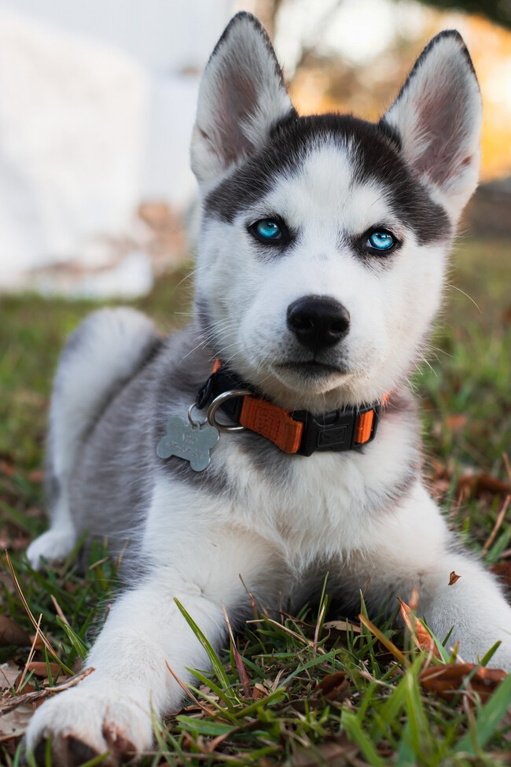

#03
AGUS
Agustín
- Ciudad
- San Nicolás (Congreso), CABA
- Edad
- 35 años
Vengo del mundo de los datos, pero me encargo además de entender procesos para mejorarlos, resolver problemas (muchas veces que no tienen absolutamente nada que ver conmigo), entre otras cosas. Si me buscan seguramente me van a encontrar quejándome de algo, pero con rock de fondo. Motto: "My parents raised a complainer, not a quitter"
Skills
- Python
- SQL
- Power BI
- Java
Películas favoritas
- Interstellar (2014)
- La Odisea (2026)
- El exorcista (1973)
Discos favoritos
- Ten — Pearl Jam
- AM — Arctic Monkeys
- La vida era más corta — Milo J
Sonando ahora
Elegí play para arrancar el show